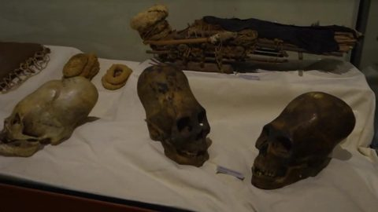

头骨告诉了我们什么？

头骨侧面用墨水写着 MRI DB。几个字母能告诉我们这个头骨来自哪里、它的记录在哪里吗？本页循着这条线索，追到已查阅资料所能到达的地方。

这些材料是如何汇集起来的
“我走遍了全球，而此刻我手里正捧着 Starchild 2 头骨。”
- 秘鲁，2014 年 11 月 1 日。 Jani 在秘鲁的博物馆和一处私人收藏中拍摄了拉长头骨。照片 01 和 03–11 是这次参观时拍摄的；在照片 03 和 04 中，是 Jani 本人手里拿着头骨。在 Travel South 的视频中，藏品所有者讲述了他的头骨，Starchild 2 被点名展示，其中一家博物馆还特别允许在后室拍摄。照片 02 是这些视频的合集。
- 开罗，2024 年 2 月 15 日。 在埃及博物馆里，他看到了一些头顶同样向后延伸很远的石雕头像。
- 2026 年存档。 照片、视频和公开资料都经过了查阅：博物馆指南、物品记录和研究。
三个问题
- 头骨上的编号会指向哪里？ 墨水写的 MRI DB 与博物馆的物品记录。
- 为什么它被称为 Starchild 2？ 这个名字借自一个来自墨西哥、更有名的头骨。
- 为什么长头会在开罗的石像中反复出现？ 阿马尔纳艺术与秘鲁头骨的并排比较。
沿途可以看到：保留着头发的三个头颅的展柜、收藏者的叙述和研究的结论。全部十一张照片及观察记录见文末的照片索引。
照片中的头骨是人类遗骸。本页只讲照片和展签中能看到的内容，以及已发表的研究怎么说。一张照片无法告诉我们死者的年龄、疾病或来历。
照片 01 和 03–11 是 Jani Korpi 2014 年在秘鲁拍摄的照片，与 2014 年 11 月 1 日拍摄的博物馆视频属于同一次参观。照片 02 是这些视频的合集。年份依据的是视频的原始文件名（20141101…）：照片 01 和 08 中的布置与视频 _IlZYy2Mbpk 和 qlPq2wTEFEc 中的看起来完全相同，而 Travel South 2011 年的秘鲁视频中没有任何头骨或博物馆画面。“左”和“右”指观看者的左右。同一件物品可能出现在多张照片中。
如何阅读这些标签
- T
- 研究结果
- A
- 编年史记载或其他文献
- L
- 传说或叙述
- S
- 推测
看看一个想象中的人物如何从头骨的形状中生长出来石城的面孔：13 组图片。AI 插画，虚构，并非研究。
一张旧照片，一个新的溯源问题：MRI DB 会指向哪里？

- 照片显示了什么。 右边头骨的侧面手写着 MRI DB 和一串数字。这个数字可能看起来像 3421，但末尾不确定，因此读法存疑。
- 与博物馆材料比对。 A 加西亚·索托 2018 年报告的第 25 页展示了伊卡地区博物馆的一条物品记录。在“Otros códigos e inscripciones”（其他编号和铭文）一栏下写着 MRI-DB-3869。该记录中的头骨收藏于 Museo Regional de Ica “Adolfo Bermúdez Jenkins”，发现地点记为 Hacienda Chongos，另一个编号为 MRI-01050-12 [2]。
- 结果。 编号的格式找到了对应：伊卡博物馆的物品记录上使用了同样的 MRI-DB 前缀。个体层面的对应仍未确定。数字并不相符，仅凭前缀既不能确认 Jani 拍摄的是哪个头骨，也不能把它与报告中的 DNA 结果联系起来。
- 下一个问题。 从一张更清晰的照片中确认完整的编号，并向博物馆查询相应的目录记录。
三个地点要区分开来。 报告中的头骨和物品记录来自伊卡地区博物馆 [2]，它与纳瓦罗博物馆是不同的机构 [3]。保留着头发的三个头颅的展柜和收藏者的叙述来自帕拉卡斯的纳瓦罗博物馆（展柜）。视频中没有显示后室的名称（后室）。照片 08 的拍摄地点尚未确认，而确认一个地点并不等于确认全部材料。用 Jani 所有的头骨照片进行反向图片搜索（2026 年 11 月 20 日），在网上其他地方都没有找到同样的展柜或标签。一位游客在 TripAdvisor 上发布的纳瓦罗博物馆照片中，有一个与照片 07同类型的玻璃架展柜，但无法从中认出相同的头骨 [20]。
保留着头发的三个头颅的展柜
在 Jani 的视频 dNgc018HQNA 中，三个头颅分别放在各自的玻璃支架上。左边头颅的侧面围着深色的类似头发的物质。中间是一个浅色的拉长头骨，头顶有一片深色的头发。右边那个深色头颅比其他两个小，单独放在一个支架上。
秘鲁文化部 2023 年博物馆指南第 175 页，展示了三个看起来非常相似的头颅，以同样的顺序放在玻璃支架上。这段视频拍摄于帕拉卡斯的 Museo Histórico Paracas “Juan Navarro Hierro”。指南以这个名称介绍该博物馆，它由纳瓦罗家族经营 [1]。Jani Korpi 于 2026 年确认了拍摄地点。伊卡地区博物馆是另一家机构 [3]。指南并不能证实亲属关系、共同墓葬，也不能证实其他照片的拍摄地点。光线和角度与指南中的照片不同。

收藏者的叙述
L 在视频 dNgc018HQNA（拍摄于 2014 年 11 月 1 日）中，讲解者是 Museo Histórico Paracas “Juan Navarro Hierro” 藏品的所有者。据他说，这些藏品是国家遗产，但归他所有。他说其中一个头骨不是来自美洲，并称它的 DNA 与北欧相符：挪威、瑞典、芬兰或俄罗斯。关于保留着头发的三个头颅的展柜，他说父亲、母亲和一个婴儿是在同一座墓中发现的，父亲和母亲的头发是红色的，婴儿的是金色的。在视频中，所有者没有出示任何研究报告、实验室或样本编号。
照片中的个体有研究编号吗？ 没有找到。展柜中的头颅上看不到可辨读的编号，博物馆指南也没有提到 DNA 研究 [1]。在加西亚·索托的报告中，来自塞罗科罗拉多（Cerro Colorado）一座被盗墓葬的一个头骨（S8）得出了线粒体单倍群 H，报告称这一单倍群在北欧很典型。然而，线粒体 DNA 只追溯一条母系世系，单凭单倍群 H 并不能把一个人归到北欧：它在北非等地也很常见（Ennafaa et al. 2009）。同一头骨的第二份样本得出的是单倍群 B5 [2]。同一头骨得出不同结果，这需要解释。该报告未经同行评审，没有获得放射性碳测年数据，也没有证明这些 DNA 确实是古代的；现代污染是这类样本中常见的解释，必须予以排除（Renaud et al. 2019）。报告中的头骨存放在伊卡地区博物馆的库房里，其中没有任何一个能与这个展柜中的头颅联系起来。
视频那些问句式的标题，例如“Ancient Skulls of Peru: Evidence of an Advanced Human Species?” (aqPy1X1mhGY) 和“Ancient Skulls of humanoids: Proof of an Advanced Human Species?” (yIA-Dykw_40)，只是视频的名称 S 。已发表的研究并不支持存在一个独立人种的观点：在已研究的帕拉卡斯材料中，这些头骨属于在童年时期头部被塑形的人 [4]。


Starchild 2 与后室
L 在收藏方以及 Jani 的视频 Investigating the Starchild 2 skull of Peru (Nov 2014) 中，这个宽而圆的头骨被称为 Starchild 2。这个名字借自另一个来自墨西哥、更有名的头骨。最好把这两个头骨区分开来：
Starchild 1 · 墨西哥
- 名字的来源
- 这个头骨后来被称为 Starchild 头骨 [7]。让它出名的是美国作家、超自然现象研究者劳埃德·派伊（Lloyd Pye，1946–2013），他在 20 世纪 90 年代末让这个头骨进入公众视野，并多年来把它说成是人类与外星人的混血 [14]。派伊领导了 Starchild 项目（Starchild Project），该项目自己的文字称其为一个自 1999 年 2 月起协调研究工作的非正式研究小组 [15]。派伊的官方网站 lloydpye.com 至今仍可访问 [16]。
- 来源已知
- L 据这个故事，头骨是 20 世纪 30 年代初在墨西哥奇瓦瓦地区发现的 [7]。发现故事并不是研究结果。
- L 据该项目自己的叙述，20 世纪 30 年代，一名美国少女在铜峡谷（Copper Canyon）地区一条废弃的矿井隧道里发现了两具骸骨，并把两个头骨带回了埃尔帕索的家。1998 年，这两个头骨被交给了雷和梅拉妮·扬（Ray and Melanie Young）夫妇，他们请派伊加入。据该项目称，放射性碳测年显示这个头骨约有 900 年历史 [15]。
- 与个体对应的研究数据
- A 《怀疑探索者》（Skeptical Inquirer）杂志上的一篇文章总结了 1999 年和 2003 年的两次 DNA 检测，据此这个头骨属于人类 [7]。关于 2003 年的分析，查阅的是一份在网上发布的文本副本。经签署的原始报告以及该副本的真实性均未经核实，因此下一段描述的是该副本的内容。
- A Trace Genetics 实验室 2003 年 8 月 12 日的报告，其文本作为该项目材料的副本在网上发布：在两次独立提取中，Starchild 头骨样本（SCS-1）的线粒体 DNA 都与美洲原住民的单倍群 C 相符，与它一起提交的第二个头骨的样本（SA-1）则与单倍群 A 相符。据报告，不同的 mtDNA 类型排除了母子关系，两者的母亲很可能都是美洲原住民。未能从 Starchild 样本中扩增出核 DNA [17]。经签署的原件无法查阅。
- L 据该项目自己 2011 年的报告，一位未具名的遗传学家对四个 mtDNA 片段进行了测序，项目方把它们与人类的差异解读为异常之大。据报告，部分研究人员目前仍保持匿名 [15]。这一结果并未以同行评审的形式发表，因此在这里它只是该项目的一种说法。
Starchild 2 · 秘鲁
- 名字的来源
- L 收藏方和视频讲解者，Travel South，2014 年 11 月 1 日。
- 来源已知
- 一处秘鲁收藏。Jani 于 2014 年 11 月 1 日拍摄了这个头骨（照片 04）并录了视频。发现地点不明。
- 与个体对应的研究数据
- 为本页所做的调研没有找到任何可以可靠地与这一个体对应的已发表研究。墨西哥那个头骨的 DNA 结果不能套用到这个头骨上。
这两个头骨唯一的共同点就是名字。
同一天，即 2014 年 11 月 1 日，Jani 经允许拍摄了另一家博物馆的后室，那里的白布上摆着头骨和包裹着的遗体（qlPq2wTEFEc）。视频中没有显示这个地方的名称。照片 05 和 09 中的布置很可能是同一处。



开罗 2024：埃及的相似长头
2024 年 2 月 15 日，Jani 在开罗埃及博物馆拍摄了一些头顶向后延伸很远的石雕头像。这种形状与秘鲁的头骨相似，但这些照片是在另一个大陆拍摄的，比秘鲁头骨照片（2014 年）晚了大约九年。
并排比较：雕像与人类遗骸


值得看的地方：头顶的弧线、额头的线条，以及后脑部在耳朵后方延伸了多远。这些照片是从不同方向和距离拍摄的，因此无法比较精确的比例。
长长的头顶是一种艺术惯例，还是真实的头形？ A 柏林埃及博物馆的藏品说明给出了答案：据其说法，女儿们向后拉长的头部纯粹是一种风格手法，并非遗传畸形或人为造成的畸形的迹象 [13]。A 据大都会艺术博物馆的展览出版物，艺术史学者一直认为，阿马尔纳的艺术家出于风格上的原因夸大了完全普通的身体特征 [19]。

T 阿马尔纳时期的艺术把法老阿肯那顿的女儿们描绘成长头的样子。据 Global Egyptian Museum，开罗博物馆的石英岩头像 JE 44869 很可能是阿肯那顿的长女梅丽塔顿，它于 1912 年在雕刻家图特摩斯的作坊中被发现 [11]。纽约大都会艺术博物馆藏有一件同类型的公主头像 [12]。据开罗博物馆的导览，JE 44869 高 21 厘米，陈列在一楼 3 号展厅 [18]；出自同一作坊的另一件公主头像 JE 44870（黄色石英岩，19 厘米）也在开罗 [19]。Jani 的照片显示了两个并排的头像，但无法确认它们与这两件物品对应。Jani 的照片中无法辨认出物品编号，因此他所拍摄头像的确切身份仍未确定。
在视频中观看：两个石雕头像，51:22 处 · 博物馆参观，从 51:31 开始（Travel South：Exploring the Egyptian Museum in Cairo，拍摄于 2024 年 2 月 15 日）。秘鲁的对应视频：Investigating Elongated Skulls in a Peruvian Museum（拍摄于 2014 年 11 月 1 日）。
与秘鲁的联系仅仅是外观上的。阿马尔纳的头像是雕塑，秘鲁的头骨则是人类遗骸；在已研究的帕拉卡斯材料中，长头被解释为童年时期进行的塑形（研究背景）。开罗的照片拍摄于 2024 年，秘鲁的照片拍摄于 2014 年。这些配对的 AI 插画见石城页面：第 12 组和第 13 组（开罗的石雕面孔与秘鲁的头骨）。
S 你会着手研究什么？
这些照片引出了许多观看者都会问的问题。这里把它们归为推测，并针对每一个问题说明什么样的证据可以解答它。
- 拉长头骨属于另一个物种吗？
- 这需要一个与个体对应的样本编号、一条目录记录，以及一份已发表的、将骨骼和基因组与人类材料进行比较的分析。在已研究的帕拉卡斯材料中，这些头骨都是人类的 [4]。
- DNA 能告诉我们什么？
- 第一步是找到一个样本编号，把这个特定的头骨与一份实验室报告联系起来。没有它，视频中讲述的 DNA 结果（收藏者的叙述）就只是一个故事。
- 背后有一个高度发达的文明吗？
- 这需要发现背景、年代测定和随葬器物，并以可核实的方式发表。“石城的面孔”这个故事展开了一种想象中的版本，它是虚构的。
从这些研究中可以得出什么结论？
| 主题 | 研究怎么说 | 来源 |
|---|---|---|
| 帕拉卡斯的颅骨塑形 | T 在帕拉卡斯洞穴文化（Paracas Cavernas，塞罗科罗拉多，约公元前 550–200 年）的死者中，有 159 个个体的头骨形状得到了分类。其中 98% 观察到了塑形，最常见的类型是垂直板状塑形。这个数字指的是本研究中的死者，而非整个人群。 | [4] |
| 腭部与颅顶的形状 | T 佛罗伦萨大学人类学与民族学博物馆收藏的 19 个来自秘鲁的成人头骨，其中 9 个经过塑形，10 个未经塑形。两组头骨上部的形状不同；腭部的平均形状没有显著差异。这项研究针对的是腭部，而不是面部外观，而且样本量很小。 | [8] |
| 该地区的 DNA | T 来自帕尔帕地区、帕拉卡斯半岛和高地的 218 个个体，年代约为公元前 800 年至公元 800 年。从 130 个个体中获得了编码区结果，从 104 个个体中获得了控制区序列。纳斯卡人群在遗传上与之前的帕拉卡斯人群相近。人群数据并不能说明单张照片中死者的来历。 | [10] |
| 2018 年的报告 | A 加西亚·索托的最终报告：伊卡地区博物馆库房中的八个头骨，30 份样本，其中五份得出了结果。没有获得放射性碳测年数据。结果（表 3）：两个头骨为 B4，一个头骨为 H 和 R，头骨 S8 的不同样本分别为 H 和 B5。三份样本中的 DNA 降解过于严重，一份未作分析。作者呼吁进一步分析。这是一份报告，而非同行评审论文。没有发现它与 Jani 照片中的个体有任何联系。 | [2] |
| 开口与一个小头骨 | T 仅凭照片，头骨开口是如何形成的、死者的年龄以及头形的成因都无法确定。开口可能是人们通过一种外科手术——环钻术——造成的，但先天异常、外伤、感染、肿瘤以及埋藏在土中造成的损坏也会形成类似的开口。要区分它们，需要检查骨骼本身。 | [6] |
| Starchild 这个名字 | A 这个名字来自据报道在墨西哥奇瓦瓦地区发现的一个头骨。据《怀疑探索者》的文章，1999 年和 2003 年的两次 DNA 检测发现它是一个人类头骨。对于秘鲁的 Starchild 2，没有找到任何能把那一结果与它联系起来的物品记录或研究。 | [7] |
要确认这个个体需要什么？ S 最有力的候选是照片 08 中右边的头骨（溯源）。一张清晰拍下完整编号的特写，或博物馆的目录记录，就能把这张照片与一个发现地点和一个样本编号联系起来。没有这一联系，年龄、年代、亲缘关系和 DNA 结果都仍是未知数。
2026 年这一主题有哪些研究？
今年发表的两项研究显示了颅骨塑形研究的走向。
- TWard et al., iScience 2026。 研究人员汇编了一个包含美洲 1,772 例人为颅骨改形的数据集，并考察了其时间和地理分布模式。根据建模结果，这种做法最早出现在中美洲，随后传播到北美洲和南美洲。环形塑形出现在已经存在板状塑形的地区，并迅速传播开来 [9]。
- TOxilia et al., Applied Sciences 2026。 对 19 个秘鲁头骨（9 个经过塑形，10 个未经塑形）进行的三维形态分析：两组的脑颅形状差异明显，腭部形状则没有。也就是说，在这些头骨中，塑形体现在脑颅上，而没有体现在腭部的平均形状上 [8]。
这两项研究都没有鉴定出 Jani 拍摄的个体，也没有显示埃及与秘鲁之间存在联系。奥西利亚（Oxilia）的结果也不能证实石城页面上插画人物的面孔；那些是虚构的。
照片索引：照片 01–11
每张照片先列出最有意思的观察，其余细节在“更多观察”下展开。
01 正面的圆形头骨

上部与眼眶
头骨的上部向两侧宽阔地弯曲。两个眼眶都可见，但照片中没有下颌和大部分下半张脸。这改变了头部与面部之间看上去的比例。
更多观察
与照片 04 和 10 的比较
圆形的轮廓、残存的眼眶区域和缺失的下半张脸彼此吻合。这些照片中没有可见的共同物品编号，但照片 01、04 和 10 很可能是从三个方向拍摄的同一件物品。
Starchild 这个名字的由来
同一件物品很可能也出现在 Jani 的视频 _IlZYy2Mbpk 中，视频标题称这个头骨为 Starchild 2。最初的 Starchild 头骨与墨西哥的奇瓦瓦有关，两项 DNA 研究（1999 年和 2003 年）发现它是一个人类头骨 [7]。没有找到任何物品记录可以把这个秘鲁头骨与那件事联系起来，或证实这个绰号。
插画 01：眼镜师调整棱镜（AI 插画，虚构）
02 视频合集中的两个拉长头骨

最上一排和中间一排左边一格
视频 aqPy1X1mhGY 的四张截图从几个方向展示了同一个浅色的高头骨。可以看到下颌。从上方看，头顶的形状以及额头后方延伸的部分更加清楚。
更多观察
第二段视频
中间一排右边两格和最下一排左边两格的来源是视频 yIA-Dykw_40。较深的表面、不同的侧面轮廓和可见的牙齿，有助于在各帧之间追踪这件物品。它很可能与最上一排的头骨不是同一个。
右下角
第三段视频是 dNgc018HQNA。一个人拿着一个浅色头骨。仅凭这一帧无法确定它是否与另外两个中的任何一个相同。因此，图中的九帧并不代表九个个体。
插画 02：一车石料从小巷经过（AI 插画，虚构）
03 手中的一个拉长头骨
照片中的物品
浅色头骨被双手侧着拿着。面部和牙齿朝右。后脑部在面部后方延伸很远，并向上弯曲。手指遮住了部分太阳穴和脸颊区域。
更多观察
与其余材料的联系
照片 02 的最后一帧显示了手中一个相似的浅色头骨。比较并未发现共同的个体编号。
比例告诉我们什么
双手有助于估计物品的大小。照片中没有比例尺，也没有三维测量，因此容积或脑的大小都只能是猜测。
插画 03：石匠检查一道接缝（AI 插画，虚构）
04 手中的一个圆形头骨：Starchild 2
照片中的物品
Jani Korpi 双手捧着一个浅色的圆形头骨局部。它朝镜头倾斜，眼眶从斜角看去。
更多观察
鉴定
面部区域的形状和缺失部分与照片 01 和 10 中的物品相似。手掌比放在桌上拍的特写更能体现大小。
仍未解决的问题
手掌的大小和透视并不能说明死者的年龄。照片无法判断这是不是一个儿童的头骨，也无法判断这种形状是否源于某种疾病。缺少该个体的研究记录或目录记录。收藏方称这个头骨为 Starchild 2（Starchild 2 与后室）。
插画 04：园丁查看一个种荚（AI 插画，虚构）
05 侧面的深色头骨

前景中的深色头骨
面部轮廓朝左，后脑部向右弯曲。侧面比正面更能显示长度。这张照片中无法可靠辨认出任何标识。
更多观察
后面颜色较浅的头骨
头顶可见不规则的深色斑块。照片 09 中左边的头骨上也有类似的图案。展示底座和背景中的物品也与照片 09 的布置相似，因此这很可能是同一个展柜。
玻璃上的反光
左边模糊的侧影是玻璃上的反光，不能算作额外的个体。光线的颜色和反光也会影响对表面色调的判断。
插画 05：水渠管理员测量水渠的高低差（AI 插画，虚构）
06 同一层架子上的两个头骨

左边的浅色头骨
头骨的后部斜向上弯曲。头骨放在一个黑色支架上。前面的小文字标签大多模糊得无法辨读。
更多观察
右边表面深色的头骨
与左边的头骨相比，头顶的轮廓更挺直。可以辨认出下颌。耳部下方可见手写数字 161。要弄清它的含义，需要查阅藏品登记册。
谁主张什么
右边头骨旁有一块展牌。展牌上的分类是展览自己的分类，并不能说明该个体的发现地点。玻璃上还能看到反光。
插画 06：织工们查看一块布（AI 插画，虚构）
07 同一层架子上的三个头骨

左边的头骨
高而浅色的头顶，额部较窄。眼眶、鼻孔和齿弓清晰可见。
更多观察
中间的头骨
与旁边的头骨相比，这个头骨较小。它被放在一个单独的透明支架上抬高。头顶有一个开口，可以看到开口的边缘。照片无法说明开口是如何形成的，也无法说明死者的年龄。要查明头骨开口的成因，需要检查骨骼本身，因为先天异常、外伤、感染、肿瘤以及埋藏在土中造成的损坏也会形成类似的开口 [6]。
右边的头骨
侧面轮廓朝左，后脑部占满了照片的右边缘。可以辨认出颧弓和几排牙齿。照片中没有任何关于这三个个体之间亲缘关系的信息。这与下文介绍的保留着头发的三个头颅的展柜是不同的布置。
插画 07：玉米市场上的相遇（AI 插画，虚构）
08 两个头骨和手写编号
左边的头骨
这个浅色头骨上有一个用红色圈出的标记，额头侧面可见黑色字迹。标记的末尾看起来像数字 18，但整个标记的读法并不确定。
更多观察
右边的头骨
头部侧面可以辨认出一个以 MRI DB 开头的手写编号。那串数字可能看起来像 3421，但末尾最好存疑。头顶上也可见标记。
登记册比对
在加西亚·索托（García Soto）报告中的伊卡物品记录上，也出现了同样的 MRI-DB 前缀，例如报告第 25 页的标记 MRI-DB-3869 [2]。在报告的清单或带图记录中，没有找到与这个头骨确定对应的条目，因此不能把报告中的发现地点或 DNA 数据归到它名下（溯源）。
插画 08：两名建造者抬着玻璃顶篷穿过大门（AI 插画，虚构）
09 帕拉卡斯墓地（Necrópolis）展签
左边较窄的头骨
轮廓比右边那个更挺直，表面有不规则的深色图案。这个角度能看到两个眼眶。这个头骨与照片 05 中后面的头骨相似。
更多观察
右边颜色较深的头骨
后脑部强烈地向后弯曲。表面有手写标记。从侧面可以辨认出下颌和一排牙齿。这个头骨很可能就是照片 05 中前景的那个头骨。
标签上有 tipo（型）这个词
标签写的是一种类型。仅凭它的位置，无法判断它属于哪个头骨，也无法判断该个体来自哪座墓葬。胡里奥·C·特略（Julio C. Tello）于 1927–1928 年发掘的瓦里卡扬（Wari Kayan）墓地，是另一处有记录的遗址 [5]。
Jani 博物馆视频中的同一个展柜
用木棍捆扎而成的水平底座，也出现在 Jani 的博物馆视频 Investigating Elongated Skulls in a Peruvian Museum (Nov 2014) 的封面图中（石城页面上的封面图）。这一共同特征有助于确认展柜，但发现地点和这些物品的身份仍然不明。
插画 09：水车之歌（AI 插画，虚构）
10 侧面的圆形头骨

侧面
照片显示一条锯齿状的骨缝从头顶沿侧面向下延伸。下方可见眼眶的边缘。照片中没有下颌和牙齿。
更多观察
角度带来了什么
放在黑色底座上的这件物品，其圆形上部从侧面完整可见。结合照片 01，可以看出同一个形状从正面和侧面看起来有多么不同。这件物品很可能与照片 01 和 04 中的是同一件。
个体数据的局限
照片中没有发现地点标签、日期或登记号。骨缝是否可见、完整的上部有多大，或是否缺少颌骨，这些本身都无法确定年龄、形状的成因或与其他个体的关系。
插画 10：石巷里的吹笛人（AI 插画，虚构）
11 整个展柜，逐层展示

最上层
左边是一个从斜角看到的头骨，中间一个头骨的上部高高隆起，右边是一个较深色的侧面轮廓，脸的一部分被裁掉了。
更多观察
第二层
右边是一个非常深色的头颅，可以辨认出牙齿。左边可以看到摄影者的倒影。从表面无法判断所用的保存方法。
第三层
左边是一个略圆的浅色侧面轮廓，中间是一个向后延伸很远的浅色头骨，右边是黑色支架上的一个淡黄色头骨。玻璃上映出后面的形状。
第四层
左边那件物品的后部可见一个有棱角的开口。中间那件的后部朝向镜头。右边那件的面部上方有一个深色开口。这些开口是如何形成的，仍无定论 [6]。
第五层
左边是一个褐色的侧面轮廓；中间那个呈橙色调，正对镜头。右边一个浅色头骨的上部可见一个深色开口。
第六层
左边浅色的表面上可见小小的深色斑点。中间那个的面部上方有一个较大的开口。右边是一个从斜前方看到的淡黄色拉长头骨。
最下层
前排左边是一个褐色头骨，中间是一个红褐色头骨，右边是一个浅色头骨。架子的下边缘被裁得很紧。各个编号无法可靠辨认。
插画 11：梯田城里交换篮子（AI 插画，虚构）
资料来源
- 秘鲁文化部：Guía de museos e instituciones museales del Perú 2023，第 175 页（Museo Histórico Paracas “Juan Navarro Hierro”）。查看来源
- García Soto, Rubén 2018：Proyecto de investigación arqueogenético de cráneos Paracas Cavernas y Paracas Necrópolis de las colecciones del Museo de Sitio de Paracas y del Museo Regional de Ica。最终报告，利马。这是一份报告，而非同行评审论文。表 1 和表 3，第 25 页的物品记录。查看来源
- 秘鲁文化部：Museo Regional de Ica “Adolfo Bermúdez Jenkins”，博物馆信息页面。查看来源
- Gómez-Mejía, J., Aponte, D., Pezo-Lanfranco, L. & Eggers, S. 2022：Intentional cranial modification as a marker of identity in Paracas Cavernas, South-Central Coast of Peru。Journal of Archaeological Science: Reports 41，103264。查看来源
- Arqueología Paracas – Wari Kayan：Acerca de las Necrópolis de Wari Kayan（研究项目页面）。查看来源
- Verano, John W. 2016：Differential diagnosis: Trepanation。International Journal of Paleopathology 14，1–9。查看来源
- Radford, Benjamin 2018：’Alien’ Mummy Identified By DNA。Skeptical Inquirer 42(4)，2018 年 7–8 月，第 10–11 页。查看来源
- Oxilia, G., Paternostro, F. 等 2026：Palatal Morphology in Artificially Modified Crania: Evidence for Limited Craniofacial Integration。Applied Sciences 16(17)，8695。查看来源
- Ward, S. M., Sánchez-Villagra, M. R., Raymond, C., Lazaro, G. R., Lynch, S. & Wilson, L. A. B. 2026：Intentional cranial modifications in the Americas: The temporal and spatial patterns of potential transmissions and cultural innovations。iScience 29(5)，115643。doi:10.1016/j.isci.2026.115643 · PMC13141071
- Fehren-Schmitz, L., Reindel, M., Tomasto Cagigao, E., Hummel, S. & Herrmann, B. 2010：Pre-Columbian population dynamics in coastal southern Peru。American Journal of Physical Anthropology 141(2)，208–221。查看来源
- Global Egyptian Museum：公主头像，JE 44869。查看来源
- 大都会艺术博物馆：群像中的公主头像，547692。查看来源
- Ägyptisches Museum und Papyrussammlung，柏林：家庭祭坛，阿肯那顿、娜芙蒂蒂和他们的三个女儿，ÄM 14145（Google Arts & Culture）。查看来源
- 维基百科：Lloyd Pye（访问于 2026 年 11 月 20 日）。查看来源
- Johnson, Andrew（编）2015：The Starchild Skull。根据 Lloyd Pye 的文字汇编（starchildproject.com、lloydpye.com），收录 Starchild Skull DNA Analysis Report 2011。查看来源
- Lloyd Pye – The Official Website of Lloyd Pye（访问于 2026 年 11 月 20 日）。查看来源
- Trace Genetics 2003：Report on the DNA analysis from skeletal remains from two skulls，2003 年 8 月 12 日。文本为 Biblioteca Pleyades 网站上的副本。查看来源
- Salah, Samy：Akhenaten。开罗埃及博物馆（博物馆导览，Internet Archive 文本），第 2 项 Head of a Princess。查看来源
- Arnold, Dorothea 1996：The Royal Women of Amarna: Images of Beauty from Ancient Egypt。大都会艺术博物馆，纽约（目录编号 50–51，以及 L. Green 撰写的 Who Was Who 一章）。查看来源
- TripAdvisor：Paracas History Museum – Juan Navarro Hierro，游客照片“a large skull (25-60% larger than normal)”（一个大头骨，比正常大 25–60%）。查看来源
视频：aqPy1X1mhGY · yIA-Dykw_40 · dNgc018HQNA · _IlZYy2Mbpk · qlPq2wTEFEc（Travel South，拍摄于 2014 年 11 月 1 日）· _ClDtZ7vcDc（Travel South，拍摄于 2014 年 10 月 30 日）。
帕拉卡斯与瓦卡奇纳目的地页面